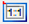
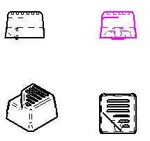

Set Sheet Scale commandUsing the Set Sheet Scale command
The Set Sheet Scale command serves several purposes:
-
It sets the sheet scale for a new working sheet.
You also can do this by selecting the Sheet Setup command.
-
It specifies the scale to be referenced in the Scale box of the title block. This is useful when there are multiple drawing views with different view scales. For example, you can use the Set Sheet Scale command to choose the drawing view whose scale you want to reference via the %{SheetScale} property text string placed in a callout in the title block.
-
It lets you choose any drawing view—not just the first view placed on the sheet using the View Wizard command—to be associative with the sheet scale. This is useful when the first view placed on the sheet was created using copy and paste, or through transfer from another sheet using the Drawing View Properties dialog box. It is also useful when the view was created using the 2D Model View command.
-
It changes the drawing view that is associated with the sheet scale. For example, you can choose a section view or a detail view to be associated with the sheet scale.
-
You can use the Set Sheet Scale command to see which drawing view is associated with the sheet scale. That drawing view is highlighted in the Select element color, which is defined on the Colors tab of the Solid Edge Options dialog box.

You can undo or redo a sheet scale change.
Manual sheet scale mode
You can set the sheet scale manually by typing a scale value or selecting a scale when you select the User-Defined Sheet Scale button on the Set Sheet Scale command bar.
Changing a sheet scale manually does not change the drawing view scale of an existing drawing view.
Associative sheet scale mode
You can use the associative sheet scale mode to derive the sheet scale from the scale of an existing drawing view. This makes the sheet scale associative to the drawing view scale. When you select the Drawing View Scale button on the Set Sheet Scale command bar, you are prompted to select a drawing view with the scale you want to use.
When a drawing view from which the sheet scale is derived is transferred to another sheet, the sheet scale is reclassified as being user-defined. Similarly, when a drawing view from which the sheet scale is derived is deleted, the sheet scale is reclassified as user-defined.
How do I
Set the drawing sheet scaleAdd custom drawing view scales to Solid Edge